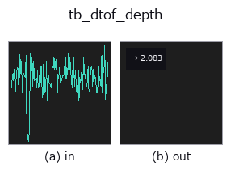

typed op• 데이터 종류: counts → feature
• 호출: fullseye.apply(img, "tb_dtof_depth", a=0.5, b=0.5)(2-D 는 이미지 1 장 + 스칼라 노브 2 개 a,b∈[0,1] 모델)

*그림은 128×128 합성 입력에서 실제로 실행한 출력. 왼쪽이 입력, 오른쪽이 출력. 점군은 위에서 본 산점도(밝기 = z), 1-D 열은 꺾은선, 볼륨은 z 방향 최대값 투영, 동영상은 가운데 프레임, 복소 영상은 진폭이며, 그림이 되지 않는 반환값은 값 자체를 표시한다.*
노브 a 를 훑기(0.1 / 0.5 / 0.9, 다른 노브는 기본값):
▸ tb_dtof_depth: knob a sweep (docs site)
*노브 b 는 출력을 바꾸지 않는다(실측: 0.1 / 0.5 / 0.9에서 동일).*
단계(앞에 오는 op → 이 op, 왼쪽에서 오른쪽으로):
▸ tb_dtof_depth: stages (docs site)
광자 도착 시간 히스토그램으로부터 구한 거리: `d = c*t/2`.
> 아래 상세 설명은 원문입니다 —— 요약과 제목은 번역되어 있습니다.
Direct time-of-flight. The light travels to the target and back, so the
one-way distance is half the round-trip time times the speed of light.
*bin_ps* is the width of one time bin (a 100 ps bin is 1.50 cm of depth).
Four estimators, from crudest to sharpest:
• `"peak"` — the centre of the fullest bin. Quantised to the bin grid;
the error is uniform in `+-half a bin (+-0.75 cm` at 100 ps).
• `"centroid"` — the first moment of the whole histogram. Exact for a
symmetric pulse *with no background*, and badly biased toward the middle
of the window with one — pass `subtract_background=True`.
• `"parabolic"` — a parabola through the peak bin and its two neighbours.
Sub-bin, cheap, and biased for a Gaussian pulse.
• `"gaussian"` — the same parabola fitted to the log of those three
samples, which is the exact vertex for a Gaussian pulse.
Measured on a noiseless simulated return at 2.4371 m (256 bins x 100 ps,
500 ps IRF), absolute error: `peak 1.29 mm, centroid` 4.4e-16 m,
`parabolic 0.067 mm, gaussian` 9.4e-9 m — three orders of magnitude
between the crudest and the sharpest.
With Poisson noise (200 signal + 200 ambient photons, seed 0) the same
four give 13.7 mm, 146.5 mm (with `subtract_background=True`), 8.5 mm and
8.0 mm. Two honest readings of that: once shot noise dominates the sub-bin
estimators buy about 1.6x, not three orders of magnitude, and the centroid
collapses because a median-subtracted ambient floor still leaves noise
across the whole window that drags the first moment toward the centre. Use
`"gaussian" or "parabolic" on noisy data; use "centroid"` only when
the background is genuinely gone.
*offset_ps* is a system delay to remove: ``t_flight = t_measured -
offset_ps``, so a positive offset makes the answer *closer*. Returns the
distance in metres as a float.
Raises `ValueError`: negative, non-finite, non-1-D or all-zero *hist*,
a non-positive *bin_ps*, an unknown *mode*, a non-finite *offset_ps*, a
flat histogram in a peak-based mode (`argmax` would silently pick bin 0
and report the first bin's depth), a peak in the first or last bin with a
sub-bin *mode* (there is no neighbour to fit to — use `"peak"`), a
degenerate three-sample fit, and — instead of returning a negative distance —
an *offset_ps* larger than the measured arrival time.
Typed bridge of the photon op `dtof_depth into the 2-D evolution registry: the same implementation, called under the op(v, a, b) convention. a drives bin_ps (default 100); b` is unused.
• 샘플 데이터 카탈로그(DL URL / 라이선스) —— 2-D 는 skimage.data(BSD/public)+ 합성, 3-D 는 실데이터 소스(Stanford/PDS 등)의 DL URL.
• 연산자의 내력·참고문헌 —— 이 연산자 족의 바탕이 된 연구/기법의 출처.
아래 프로그램은 실제로 실행됨을 확인했습니다(그림과 같은 입력). Studio 도움말에서는 이 블록이 버튼이 되어 즉시 불러와 실행할 수 있습니다.
img_to_counts 0.50 0.50 tb_dtof_depth 0.50 0.50
▸ Load this pipeline · Load & run
아래 예제는 원래의 대장 op dtof_depth를 호출한다. 이 브리지 op는 같은 구현을 fn(v, a, b) 규약에 맞춘 것뿐이므로 동작은 그대로 적용된다(호출 형식만 다름).
• photon_timeresolved — py -3.11 examples/photon_timeresolved.py
• poc_dtof_ranging — py -3.11 examples/poc_dtof_ranging.py
feature 를 입력으로 받는 것)typed)tb_points_to_voxel · tb_estimate_point_normals · tb_iss_keypoints · tb_project_points · tb_render_point_depth · tb_statistical_outlier_removal · tb_radius_outlier_removal · tb_voxel_grid_downsample
*Provenance: ops.py — 2D 연산자 레지스트리. 이 op 노트는 tools/opdocs.py md 가 자동 생성합니다(직접 편집하지 마세요).*
© 2026 Kazufumi Furuse — Fullseye operator documentation. Licensed under Apache-2.0.
{kind=link}
{kind=link}